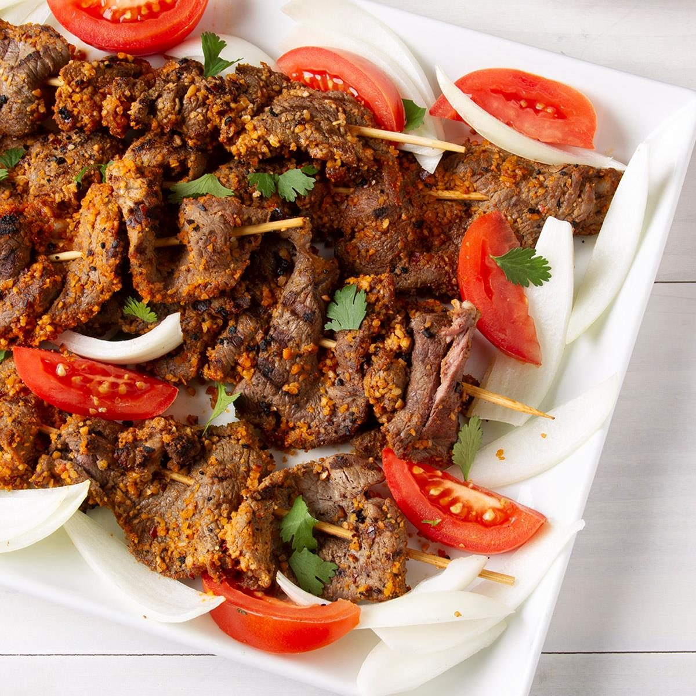
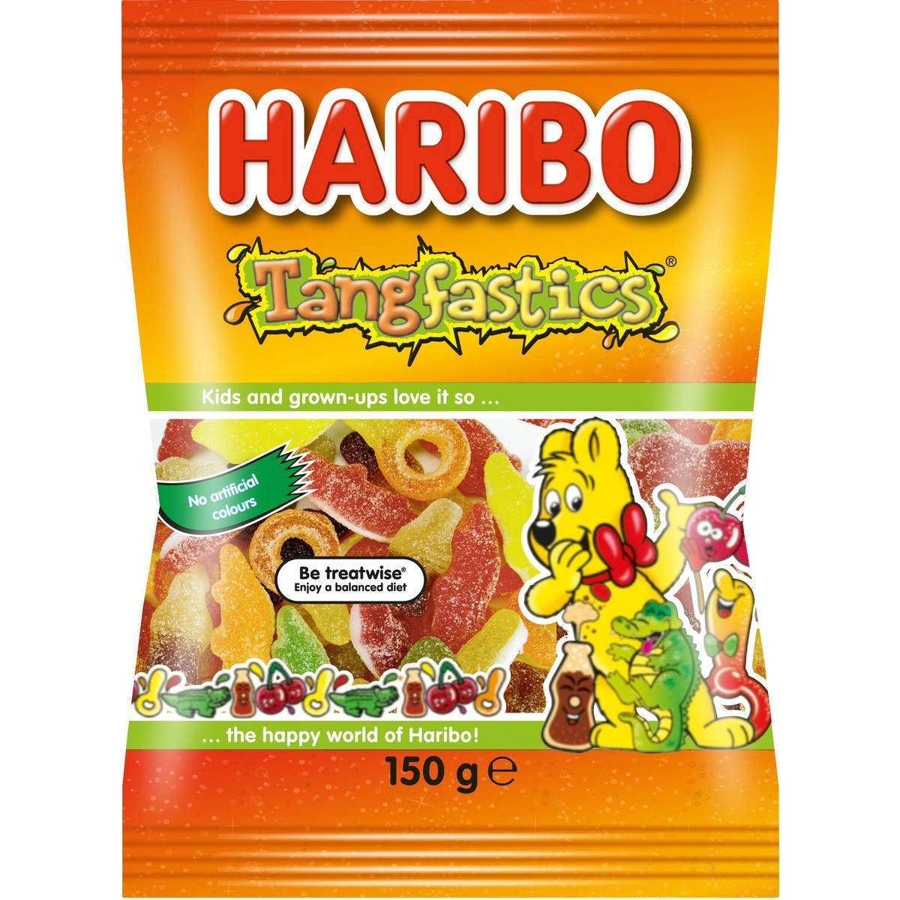

Meat Pie

Suya

Haribos
Hello! MY name is Fiyin Iyanda and I am 12 years old. My birthdate is on the 16th of July, 2012. I live in a county town called Ipswich, which is the county town of Suffolk. My favourite hobbies are football, basketball, and gaming. I play for a football team but I don't play for a basketball team. I also love the food my mum cooks for me, and just food in general. I have a litte brother called Fire, who is 6 years old. I have also got a little sister called Fope, who is 9 years old. Our names have meanings, but I don't know what they are. I also support my local football team, Ipswich Football Club. I support the Milwaukee Bucks when it comes to basketball.
Meat Pie
Suya
Haribos

Haribos are an industry for making sweets. They have many different flavours, which consist of Starmix, Supermix, Twin Snakes, and more. My favourites are happy cola and tangfastics.